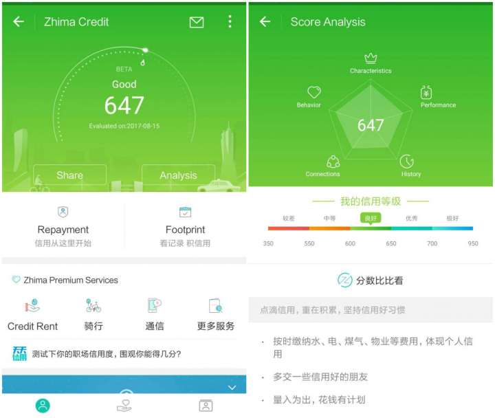

In a time where digital innovations are lauded by the world, those with any interest in privacy have ample reason to become increasingly disquieted. 2017 saw one of the biggest data breaches in history, increasing regulatory pressure on privacy and scarily effective security threats. Though not all is doom and gloom, a word of worry should be uttered for the increasing digital threats and their unfathomable scale. Let's look at the worst 2017 had to offer.
There are so many awesome things about the technological progress we're making in the world, but for every innovation there appear to be multiple abusers. When following news reports, the biggest offenders appear to be cybercriminals. When we dig deeper we can say that nation states and large corporations are worse offenders.
Nation states love censorship
When you tear out a man's tongue, you are not proving him a liar, you're only telling the world that you fear what he might say.
— George R.R. Martin, A Clash of Kings
Nation states appear to love using their reach and power to control what their citizens see and do. While some limitations on personal freedom are required, such as not being allowed to attack someone, others are imposed to grasp control. One of such measures is blocking internet sites or services for reasons other than them being against the law, for example if they contain malware or child pornography. Even then, there's a grey area with the likes of The Pirate Bay and BitTorrent. The main question here is whether you should make it impossible for your citizens to break the law.
Increasingly so, we see internet censorship being used by states to regulate the online activities of their citizens. The great digital wall of China is the most well-known example of this, as are behaviours of repressive governments during the Arabic spring and in Syria.
In 2017, one of the most disconcerting incidents was the news of Spain blocking websites that aimed to inform Catalonian citizens on the independence referendum. While the referendum was judged as being illegal by the constitutional court, internet censorship was one of the tools used to oppress the movement. Blocking these websites was an unprecedented act of government internet censorship in Western states. The Electronic Frontier Foundation concluded that these actions were conflicting with the Universal Declaration of Human Rights.
Now, at the time of writing, the main referendum website, referendum.cat, displays the message "This domain name has been seized pursuant to a seizure warrant under the Judicial Authority and is under its administration". These censorship orders also allowed the Spanish authorities to seize any future domains with content related to the referendum, which they did. This included non-profit organisations and campaign websites by legal political parties.
Moving a little further southeast and we find that both the Egyptian and Turkish governments have been using internet censorship increasingly. Egypt keeps itself busy by blocking Western news websites, whereas Turkey has blacklisted over 100.000 websites over the years. One of the new additions in 2017 was Wikipedia, allegedly for associating Turkey with terrorism. Our biggest friends China and Russia have even larger ambitions. They ordered the telecom companies to block all VPNs services, which are a way of hiding yourself online. In both countries, this may take away one of the last hopes for dissidents to speak out against their respective governments (Dutch).
While many more cases of internet censorship appeared in 2017, these were the most prominent. The international community appears to do little to condemn internet censorship. Internet freedom appears to be in a downward trend across the world, with surveillance and control appearing to be more important to nation states when it suits them.
Hacking goes lethal
While censorship is one of the biggest privacy issues next to data abuse and surveillance, hacking has an increasing influence and presence. Reports of ransomware and data breaches are becoming more frequent in popular media. 2017 gave us some excellent examples to worry about.
In March, we saw a revelation from WikiLeaks that the CIA was looking into hacking cars. Something which WikiLeaks stated could be used for "nearly undetectable assassinations". Car hacking first came under my attention in 2015, when two security researchers hacked a 2014 Jeep Cherokee and were able to turn the steering wheel, briefly disable the brakes and shut down the engine. While this is an unlikely scenario for a personal target, it's but one example that shows the increasing consequences of hacks.
Another worrisome example is found in vulnerabilities of medical devices such as pacemakers and insulin pumps. In August, the US Food and Drugs Administration ordered the recall of 465.000 pacemakers, which needed a security update. They were vulnerable to hacks that could run down the batteries or allow the altering of a patient's heart rate. Hackers could even order the pacemaker to give out a lethal shock. Luckily, they don't need to be removed to be updated. Possibilities such as these were known before, as in 2013 former US vice president Dick Cheney revealed that his doctor ordered the Wi-Fi functionality of his pacemaker disabled.
The case for insulin pumps was made by the McAfee researcher Barnaby Jack. He demonstrated how network-connected insulin pumps could be remotely manipulated to deliver a lethal dose of insulin. He created a device with a specialised antenna and software that allowed him to locate and control certain insulin pumps in a range of 100 meters. These devices were first manufactured in 2006, an era where cybersecurity was less on the forefront of everyone's mind and hacking methods were less sophisticated. While not the biggest risk, because the hack requires a real-world presence, it shows the importance of continued support for older devices.
Data breaches
Going back to hacks that have a huge impact, there have been several data breaches that show the unprecedented scale of hacks. Yahoo updated its numbers on their 2013 data breach, correcting its earlier estimate of 1 billion compromised accounts to 3 billion. Luckily, the stolen information did not include payment card information, bank account information or unencrypted passwords. They also state that they used the strong bcrypt hashing algorithm, but experts say that they may have used outdated, easily cracked encryption (learn more in my article on password cracking). So far, this has been the biggest data breach in history.
One of the most impactful hacks in history occurred this year: Equifax. A vulnerability exposed the data of about 143 million customers, including social security numbers, birth dates, addresses and telephone numbers. It also included 209.000 cases of credit card data and 182.000 dispute documents with personally identifiable information. That's more than you'll ever need for identity theft, making the potential consequences of this hack extremely dangerous in the long term. The hackers exploited a previously known vulnerability in a piece of software Equifax failed to update.
Abuse of personal data and the surveillance state
2017 also sees the further hollowing out of privacy within both governments and corporations. From obtaining a social credit score through government supported applications to increased surveillance by nation states, we should reconsider whether governments truly try to protect their citizens.
We’re seeing an increasing interest in the Smart City concept. This is built on the notion that the Internet-of-Things, in which computers are embedded in everyday objects (i.e. a smart thermostat), will support the creation of a city that can be increasingly monitored and controlled. The narrative is one of systematic data generation, collection and centralisation. While this certainly has upsides, it also leads to an increase of surveillance in the public space. We have already seen that this can also lead to discrimination in the predictive policing movement. In this movement, areas that historically saw more reported crime were mentioned to be at higher risk of future crimes, failing to disregard the racial background of many of those arrests. Smart Cities aren’t a bad idea, but guarding for citizen privacy is a must.

A new term, at least to me, emerged with the launch of Carrot Rewards in 2015: the nanny state. Carrot Rewards is a Canadian government-sponsored app that rewards points to citizens who make healthy choices. This is something seen before in the Chinese Sesame Credit, which ranks citizens based on factors such as loyalty to Chinese brands and the government based on social media interactions and online purchases.
In the Chinese system, a higher score rewards the citizen with easier access to loans, jobs and a priority during bureaucratic paperwork. The inverse holds for low scoring citizens. This was criticised as being a mass surveillance tool and mass disciplinary machine. The Carrot Rewards app is rather innocent in comparison, but it's also unclear whether the Canadian government has access to the data provided. The app continued to gain funding and publicity in 2017. It could signal a rabbit hole we may not want to enter.
There's also a trend in the increase of surveillance legislation in Western countries. One I'm more familiar with is the Dutch law going by the name of "de Sleepwet". This law allows for the mass collection of online communication and hacking of automated devices (i.e. smartphones, smart TVs and computers). This data can then be shared with foreign intelligence authorities without first analysing it. Couple that with bad design for supervision of the use of these actions and you have an incomplete law in place. While I agree that state actors should have the possibility to legally tap internet traffic, there should be clear limitations and controls to protect citizens from power abuse. There will be a referendum in March 2018, but some members of parliament have already stated that they would prefer ignoring the outcome.
Furthermore, there are some concerning facts from the US and UK as well. Across the pond, the US does not have mandatory data retention laws for Internet Service Providers (ISPs). In March 2017, something changed. While ISPs aren't required to store user data, the US congress repealed the Federal Communications Commission's (FCC) broadband privacy protections. That means that ISPs can now leverage browsing data for profitable means, such as advertisements. Added to this is the repeal of the net neutrality regulation by the FCC, allowing ISPs to favour specific sources of internet traffic. I'm interested to see what the future will hold for the US ISP market. My prediction is that business models will arise around neutral and private internet access.
These are some of the most compelling examples I have of the increased surveillance state. Interestingly, the US isn't actively increasing its surveillance, rather than loosening regulations. Of course, they already have the Patriot Act in place to force data handovers in secrecy. Either way, the trend isn't something to write home about.
Corporations aren't playing nice either
In the meantime, corporations continue to do more with user data and by extension the collection of behavioural patterns. The internet sees more and more invasive tracking tools and states fail to regulate these. 2017 brought nothing new in that area, we only saw more cases of data collection that went beyond a functional use.
Scrolling through the New York Times privacy section reveals several excellent examples of data abuse. Many people, me included, use Gmail. Apparently, Google has deemed itself fit to scan e-mail content in the free version of Gmail to personalise advertisements. After many complaints, the company has decided to stop scanning the emails of their 1.2 billion users, but historical data will continue to be used. In the same year, we also found that the popular inbox management service Unroll.me, used to manage email subscriptions, was selling user inbox data. The data was aggregated and anonymous, but having a service you trust with your inbox scanning it to make a profit from something unrelated to the actual service is disheartening. I myself have naively been using Unroll.me until this came to light.
Facebook has been in the news as well with its data collection practices. In 2017, it has been reprimanded by the Dutch, French, German and Spanish authorities for failing to be compliant to data protection regulations. Among the issues mentioned are wrongful data collection and not giving the user enough control over how their data is used. This resulted in several fines, totalling several hundreds of thousands of dollars. Of course, this is just peanuts on Facebook's multi-billion dollar revenue. Isn't it ironic how some of the countries that fined Facebook were on the nation state list above?
Luckily, we still have companies like Apple. While they do use their data for profit, they also refused governments to help them hack their devices. Amazon is also playing hardball with the US police, as they told them to go through all the required legal procedures before giving up the data. While it raises the question why they store all that data in the first place (well, for profit), it's commendable that they stood their ground.
The data rat race is still going strong. Companies will keep collecting data until they drown in it and then some. The painful thing is that free services are never free and you, the user, are the product. Your data is worth hard cash and companies will pounce on you with the best free services.
What the future holds
Besides all these negative issues, I must say that there appears to be a movement towards better regulation. Unfortunately, one of the largest offenders are the exact governments we should be able to trust to protect us from such misconduct. The General Data Protection Regulation, which is the new European privacy regulation, is a step in the right direction. My faint hope is that we will see more of these initiatives and move forward carefully in the digital age.
We can't stop innovation, so we should just try to make the best of it. Be wary of what you purchase, especially when it connects to the internet. I'm sure we're all able to survive without a smart toaster, so let's not get one.
What do you think of my review of 2017? Is there anything -- positive or negative -- that I missed, or is it worse than you expected?


Comments
Enabling comments requires your consent for Disqus to place cookies. You can review their privacy policy here.